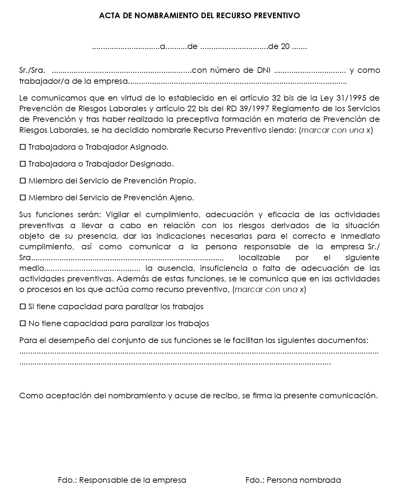

Los recursos preventivos son trabajadores encargados de vigilar de forma permanente las condiciones de seguridad del centro de trabajo (art. 32 bis LPRL y art. 22 bis RSP). Su presencia es obligatoria en los siguientes supuestos:
Cuando los riesgos puedan verse agravados o modificados por la concurrencia de operaciones diversas que se desarrollan sucesiva o simultáneamente y que hagan preciso el control de la correcta aplicación de los métodos de trabajo.
Cuando se realicen las siguientes actividades o procesos peligrosos o con riesgos especiales:
Trabajos con riesgos especialmente graves de caída desde altura.
Trabajos con riesgo de sepultamiento o hundimiento.
Actividades en las que se utilicen máquinas que carezcan de declaración CEde conformidad por ser su fecha de comercialización anterior a la exigencia de tal declaración con carácter obligatorio, cuando la protección del trabajador no esté suficientemente garantizada no obstante haberse adoptado las medidas reglamentarias de aplicación.
Trabajos en espacios confinados.
Trabajos con riesgo de ahogamiento por inmersión.
Cuando la necesidad de dicha presencia sea requerida por la Inspección de Trabajo y Seguridad Social.
El empresario deberá elegir entre alguna de las siguientes modalidades de recursos preventivos:
Uno o varios trabajadores designados de la empresa.
Uno o varios miembros del servicio de prevención propio de la empresa.
Uno o varios miembros del o los servicios de prevención ajenos concertados por la empresa. Cuando la presencia sea realizada por diferentes recursos preventivos éstos deberán colaborar entre sí.
Trabajadores con formación preventiva suficiente y adecuado conocimiento y/o experiencia en relación con los trabajos y actividades desarrollados por la empresa.
Actividad de los recursos preventivos
Los recursos preventivos deben vigilar el cumplimiento de las actividades preventivas aplicadas en la empresa para el control de los riesgos que exigen su presencia en el centro de trabajo. En concreto, los recursos preventivos deberán:
Comprobar la eficacia de las actividades preventivas previstas en la planificación preventiva.
Comprobar la adecuación de tales actividades a los riesgos que pretenden prevenirse o a la aparición de riesgos no previstos y derivados de la situación que determina la necesidad de la presencia de los recursos preventivos.
Si los recursos preventivos detectan un deficiente cumplimiento de las actividades preventivas adoptadas o la ineficacia de éstas, deberán:
Hacer las indicaciones necesarias para el correcto e inmediato cumplimiento de las actividades preventivas.
Comunicar el fallo detectado al empresario. para que adopte las medidas oportunas para subsanarlo.
Elaboración propia. Acta de nombramiento de recurso preventivo
Requisitos
Los recursos preventivos deberán cumplir los siguientes requisitos:
Tener la capacidad suficiente.
Disponer de los medios necesarios.
Ser suficientes en número para vigilar el cumplimiento de las actividades preventivas, debiendo permanecer en el centro de trabajo durante el tiempo en que se mantenga la situación que determine su presencia.
.jpg){kind=link}